【中配】中国刚刚触发了全球货币重置
时长 16:27 · 分辨率 852x480 · 生成于 2026-09-12 | 来源
ref/BV1AatW62Ekz.mp4· 视频链接
概述
2026年7月，中国四大国有银行——工商银行、农业银行、建设银行、中国银行——几乎同时关闭了散户纸黄金交易。官方理由是保护投资者免受黄金极端价格波动影响，但另一种解读认为，这是中国在争夺全球货币控制权博弈中落下的第一枚棋子。本文梳理这一事件背后的历史逻辑：从布雷顿森林体系的建立与崩溃，到纸黄金体系的结构性缺陷，再到中国构建以实物黄金为锚的人民币定价体系的完整计划。
一、事件：四大行叫停纸黄金交易
- 时间：2026年7月24日起
- 涉及机构：中国工商银行、中国农业银行、中国建设银行、中国银行（按总资产计为全球最大四家本土银行）
- 措施：停止个人贵金属保证金交易，关闭散户纸黄金交易渠道
- 官方理由：保护中国公民免受黄金极端价格波动影响
黄金价格波动背景
| 时间 | 价格 | 变动 |
|---|---|---|
| 2026年1月 | 每盎司5,500美元 | 历史高位 |
| 2026年7月 | 每盎司4,000美元 | 7个月内下跌约30% |
这一波动确实可能让不少中国散户投资者损失惨重。但非官方解读认为，中国可能刚刚在争夺全球货币控制权的博弈中迈出了第一个大动作。
二、历史背景：黄金与货币体系的两次崩溃
关键指标：黄金价值占货币总供应量的比例
该比例刚刚创下171% 的历史新高。在过去100年数据中，这条线只有两次突破120：
| 时期 | 事件 | 后果 |
|---|---|---|
| 20世纪30年代 | 罗斯福打破美元与黄金固定挂钩，金价从约20美元/盎司上调至35美元/盎司 | 全球货币体系信任崩溃 |
| 20世纪70年代 | 尼克松让美元彻底脱离金本位（"尼克松冲击"） | 引发黄金有史以来最大规模价格调整 |
这两个时刻都伴随着全球货币体系信任的彻底崩溃。如今这条线再次触及创纪录水平，似乎表明中国正在预判黄金将迎来又一次重大重新定价。
布雷顿森林体系（1944年）
1944年，44个国家政府在美国布雷顿森林召开会议，商定全球货币体系：
- 美元成为各国国际贸易结算货币
- 美国承诺：任何持有美元的政府可随时按每盎司35美元固定价格兑换黄金
- 约束：美国每印出35美元，必须在金库持有至少1盎司黄金作为支撑
1944年支撑比例：100%——流通中每一美元都有对应黄金。
体系瓦解过程
| 时期 | 货币基础 | 黄金支撑比例 | 原因 |
|---|---|---|---|
| 1944年 | — | 100% | 体系建立 |
| 1948年 | 1,650亿美元 | — | — |
| 1968年 | 6,700亿美元 | — | 社会项目、越南战争（每年约1万亿美元） |
| 1971年 | — | 20% | 货币基础增长约4倍，黄金未同步增加 |
各国政府发现：每一美元实际所值黄金仅为1944年承诺的四分之一。于是纷纷将美元交还美国换取黄金，耗尽美国黄金储备，迫使尼克松于1971年终止美元兑换黄金。
结果：此后10年内，黄金价格飙升近2倍。
关键启示：黄金价格此前一直被人为压低，被布雷顿森林体系的纸面承诺所压制。今天正在发生非常相似的事情，而中国瞄准的正是完全相同的布局。
三、纸黄金体系的结构性缺陷
运作机制
在当今体系下，大多数人购买黄金时，只有约1%至5% 是真正的实物黄金，剩下95% 通过纸质凭证结算。
纸黄金体系的运作方式：
- 银行金库存放一盎司实物黄金
- 银行开出凭证，赋予持有者以X美元兑换该金条的权利
- 银行意识到客户很可能永远不会要求提取实物
- 银行为同一盎司黄金开出第二张、第三张……甚至第100张凭证
- 最终可能有100个人都以为自己拥有金库里那同一盎司黄金
杠杆倍数
据估计，世界上每存在一盎司实物黄金，就有133份针对它的纸质索赔。纸黄金数量是实际实物黄金的133倍。
只要没有人真的上门提取，体系就能运转。但一旦所有人同时要求提取实物黄金，整个体系就会崩溃——133人中有132人会发现，他们的黄金凭证背后没有任何真实黄金支撑。
这正是1971年发生过的事情：对体系的信任崩塌，纸质索赔变得一文不值，实物黄金价格一飞冲天。
当前压力信号：实物与纸黄金价差
| 类别 | 正常溢价 | 当前溢价 | 倍数 |
|---|---|---|---|
| 大金条 | 0.2% | 2.5% | 12倍以上 |
| 较小金币 | 0.2% | 7.5% | 35倍以上 |
这种溢价本质上是人们愿意额外支付的钱，以确保自己持有的是真正的实物金属，而不仅仅是一张纸面承诺。这表明，与中国一样，世界其他地方的私人投资者也开始怀疑纸凭证数量远远多于金库里的实物金条。
四、全球央行的实物黄金抢购
官方数据
- 2022年至2025年：全球央行每年累计购入1,000吨实物黄金
- 这一速度是2010年至2021年平均购买速度的两倍
未披露购买
世界黄金协会估计，很大一部分央行从未报告其全部黄金购买量，即"未披露购买"。
| 时间 | 官方报告 | 非官方估计 | 倍数 |
|---|---|---|---|
| 2026年第一季度 | 约16吨 | 约244吨 | 约15倍 |
中国的特殊角色
- 中国持有的美国国债数量自2014年以来已下跌近50%
- 2014年正是中国开始快速积累黄金的时间点
- 两个趋势（抛售美债、囤积黄金）都始于同一年：2014年
五、中国的黄金体系计划
2014年的宣言
2014年，上海黄金交易所负责人在伦敦金银市场协会（LBMA）发表演讲，原话如下：
"上海金将改变当前黄金市场消费在东方、定价在西方这样的格局。当中国在国际黄金市场拥有话语权时，黄金的真实价格将会显现。"
这等于直接告诉西方金融建制派：一旦中国坐上谈判桌，世界将看到黄金真正的价值。那是12年前的事，而到了2026年，这个计划开始逐步展开。
纸黄金禁令的真实含义
中国真正在关停的是什么？
- 不是禁止黄金本身——中国公民仍可完全自由买卖实物黄金
- 取消的是所有保证金交易和杠杆合约，即纸黄金市场催生的投机和赌博那一面
- 目的：逐步削减纸质供应，反击"每一盎司黄金对应133份纸质所有权"的局面
这意味着一直被纸面供应人为压低的黄金价格，最终将不得不重新定价，以反映供需平衡的现实。
新黄金体系的两大支柱
第一部分：上海黄金交易所
- 纸黄金禁令改变了这里的规则，要求实物交割
- 黄金交易时，实物金属必须从卖方金库转移到买方金库
- 机构再也不能针对一根实物金条卖出133份所有权
- 这是一个只建立在实物金属之上的市场，实现真正的价格发现
第二部分：香港作为国际门户
- 中国资本管制规定让外国人难以直接在上海境内交易
- 香港很可能成为面向世界其他地方的门户
- 香港正把黄金金库空间从约200吨扩大到2,000多吨（10倍）
- 纸黄金市场不需要任何金库，为2,000吨黄金建造存储空间只有一个原因：预计2,000吨实物黄金真的会运到
平行体系的形成
将这两部分合在一起，中国实际上是在创建一套平行的黄金定价体系，成为伦敦和纽约以美元为基础的纸黄金体系之外的替代方案。
六、战略动机：为什么要让黄金重新定价
美元体系的做空本质
中国认识到，以美元为基础的纸黄金交易体系在结构上是做空黄金的，因为它可以无限创造虚假供应。已有证据表明这个体系在人为压低黄金价格。
与此同时，美国政府更感兴趣的是通过美元贬值来管理其40万亿美元的债务，而不是通过让美元走强来获得更多金融霸权。
人民币锚定黄金的逻辑
如果中国能够：
- 控制全球最受信任的货币（黄金）的价格
- 用人民币结算
- 针对存放在香港的真实实物黄金进行交割
那么，此前对人民币持犹豫态度的世界，至少会有一个持有它的理由。
这与美国在1944年的安排相同——当时美国向世界承诺让美元锚定黄金。尽管该体系最终崩溃，但它为美国定义了接下来80年的金融霸权。
历史类比：英镑到美元的转变
- 世界并不完全信任人民币本身，因为它由中国政府控制
- 历史上，像1944年那种重大货币重置，也需要一次重大的地缘政治重置（如世界大战）
- 英镑直到第二次世界大战期间才开始把储备货币地位输给美元
- 但中国知道全世界完全信任黄金——它有着数千年历史记录，是最可靠的价值储藏手段
可能的终局
如果美元等替代货币因过渡期而开始崩溃，同时中国又能将其货币锚定在真实的实物黄金价格上，那么世界其他国家甚至可能别无选择，只能最终采用人民币来维持全球贸易运转。
这就是中国有可能在不真正与美国开战的情况下，重置全球货币体系的方式。
七、个人应对策略
关键认知
- 储备货币地位的转变不是一夜之间发生的，通常需要十多年才能完全展开
- 在这个过程中，市场和经济会被重塑
- "有些几十年里什么都没发生，而有些几个星期里，几十年的变化都发生了"
规则变化的影响
当一个体系发生变化时，规则也会随之改变。昨天成立的事情，明天不一定还成立。以下价值都可能经历剧烈变化：
- 货币的价值
- 股票价格
- 房产
- 食品
- 能源
行动建议
- 不要恐慌，不要做出非理性的决定
- 任何人都可以在这种货币秩序转变中保护自己，甚至从中获益
- 投资是金融体系中最强大的一股力量，能让普通人在长期中建立真正的财富
- 尽快制定一个计划，来保护和增长你的财富
- 如果做得好，你就能在这种重大变革时期蓬勃发展
关键术语
| 术语 | 含义 |
|---|---|
| 纸黄金 | 通过纸质凭证结算的黄金交易，不涉及实物交割 |
| 实物黄金 | 真实存在的金条、金币等实体黄金 |
| 布雷顿森林体系 | 1944年建立的以美元锚定黄金的国际货币体系 |
| 尼克松冲击 | 1971年尼克松总统终止美元兑换黄金的决定 |
| LBMA | 伦敦金银市场协会，西方纸黄金定价体系的核心 |
| 上海黄金交易所 | 中国黄金交易的主要平台，要求实物交割 |
| 未披露购买 | 央行未公开报告的黄金购买量 |
| 价格发现 | 通过市场供需确定真实价格的过程 |
| 储备货币地位 | 被各国广泛用于国际贸易和储备的货币地位 |
要点速览
- 2026年7月：中国四大行关闭散户纸黄金交易，官方称保护投资者
- 历史规律：黄金价值占货币供应比例突破120%的两次（1930年代、1970年代）都伴随货币体系信任崩溃
- 纸黄金杠杆：每1盎司实物黄金对应133份纸质索赔
- 价差信号：大金条溢价达2.5%（正常0.2%），金币溢价达7.5%
- 央行抢购：2022-2025年每年购入1,000吨实物黄金，是此前速度的两倍
- 中国行动：2014年开始抛售美债、囤积黄金；上海金交所要求实物交割；香港金库从200吨扩至2,000吨
- 战略目标：构建以实物黄金为锚的人民币定价体系，替代伦敦/纽约的美元纸黄金体系
- 个人应对：不要恐慌，制定长期投资计划，在变革中保护和增长财富
附录：原始提取素材
语音全文转写（带时间戳）
[00:03–00:15]就在几周前发生了一件全世界前所未见的事情﹐全球最大的本土银行、中国工商银行,正式关闭了所有客户的纸黄金交易。[00:15–00:21]这意味着,如果你是一名想通过银行交易黄金的中国公民,你的交易渠道基本上已被切断。[00:21–00:24]这样做的中国银行并不只有这一家。[00:24–00:32]中国农业银行、中国建设银行和中国银行基本上都叫停了散户纸黄金交易,按总资产计算。[00:32–00:40]这是全球最大的四家本土银行,而他们全都在完全相同的时间终止了完全相同的产品。[00:40–00:46]现在他们给出的官方理由是,这样做是为了保护中国公民免受黄金极端价格波动的影响。[00:46–00:49]确实,如果我们看一下今年的黄金价格,它一直波动的相当剧烈。[00:49–00:59]2020年1月,黄金价格飙升至每盎司5500美元的高位,随后出现相当猛烈的下跌,一路回落至4000美元,也就是在7个月内下跌了30%,[00:59–01:03]这很可能确实让不少中国散户投资者亏得血本无归。[01:03–01:13]但还有另一种解释,一种非官方的解读,那就是中国可能刚刚在争夺全球货币控制权的博弈中买出了第一个大动作。[01:13–01:21]因为很多人不知道的是,就在我们说话的当下,中国正在构建一套新体系,试图重塑全球货币体系,[01:21–01:26]而且越来越明显的是,他们打算利用黄金来推动这套体系向前发展。[01:26–01:37]先给个背景,中国现在采取这一动作,恰逢黄金价值占货币总供应量的比例,刚刚创下171%的历史新高。[01:37–01:46]在过去100年的数据里,这条线只有两次突破120的关口,一次是在20世纪30年代,另一次是在20世纪70年代。[01:46–01:52]这两个时刻都恰好伴随着全球货币体系信任的彻底崩溃。[01:52–02:03]1933年,罗斯福总统打破了美元与黄金的固定挂钩关系,并在一夜之间将黄金价格从每盎司约20美元一路上调到每盎司35美元。[02:03–02:08]而在1971年,尼克松总统让美元彻底脱离了金本位。[02:08–02:17]这意味着,美元不再由任何实物资产支撑,这一决定后来被称为尼克松冲击,他也引发了黄金有史以来最大规模的一次价格调整。[02:17–02:24]如今,随着这条线,再次触及创纪录的水平,似乎是中国正在预判黄金将迎来又一次重大的重新定价。[02:24–02:31]要弄清楚究竟为什么,我们得回到1944年,也就是第二次世界大战即将结束的时候。[02:31–02:39]就在同一年,世界各国的44个政府在布雷顿森林会议上聚到一起,商定了一套简单的全球货币体系。[02:39–02:43]美元将成为每个国家进行国际贸易时使用的货币。[02:43–02:54]而为了确保美元值得信任,美国承诺任何持有美元的政府都可以随时按每盎司35美元的固定价格把美元兑换成黄金。[02:54–03:01]这个承诺意味着美国每印出35美元就必须在金库里至少持有盎司黄金作为支撑。[03:01–03:09]所以美国基本上必须用真正的实物黄金来支撑它的整个货币基础,也就是流通中的美元总量。[03:09–03:16]如果我们看看支撑美国货币基础的黄金比例就会发现,在1944年这个比例是100%,[03:16–03:21]也就是说流通中的每一美元在美国金库里都有对应数量的黄金。[03:22–03:30]但到了20世纪50年代和60年代,这条线开始下降,表明美国花的钱已经超过了他们金库里的黄金。[03:30–03:35]这些钱花在了社会项目等方面,但也花在了越南战争等地缘政治野心上。[03:35–03:39]按今天的币值计算,他们在那场战争中每年花费相当于1万亿美元。[03:39–03:51]为了支付所有这些不断增长的成本,美国中央银行扩大了货币基础,从1948年的1650亿美元增加到1968年的6700亿美元。[03:51–03:58]当然,虽然流通中的美元数量增长了大约4倍,但躺在美国金库里的黄金却没有跟上步伐。[03:58–04:04]因此,到1971年,支撑美国货币基础的黄金数量下降到了只有20%。[04:04–04:08]世界各国政府看到这一点,开始算了一笔账。[04:08–04:13]如果世界上的美元数量变成了4倍,而美国金库中的黄金却没有相应增加。[04:13–04:19]那么每一美元实际所值的黄金,其实只有1944年最初承诺的四分之一。[04:19–04:26]所以很自然的各国政府开始把美元交还回去,按他们认为的折扣价拿走黄金。[04:26–04:34]这基本上耗尽了美国的黄金储备,迫使尼克松总统在1971年终止美元兑换黄金的可兑换性。[04:34–04:39]所以那一天,布雷顿森林体系赖以建立的那个承诺,一夜之间就被打破了。[04:39–04:45]而在这一事件发生后的10年内,黄金价格飙升了近2倍。[04:45–04:49]所以这一点绝对关键,因为今天正在发生非常相似的事情。[04:49–04:53]这段历史告诉我们的是,黄金价格此前一直被人为压低,[04:53–04:57]被布雷顿森林体系的纸面承诺,所以这一点绝对关键,[04:57–05:00]因为今天正在发生非常相似的事情。[05:00–05:05]而这正是中国今天所瞄准的完全相同的布局。[05:05–05:08]你看,在2026年大多数人购买黄金时,[05:08–05:12]其中只有大约1%到5%是真正的实物黄金。[05:12–05:16]剩下95%的黄金交易,完全是通过纸质凭证结算的。[05:16–05:19]所以这一点绝对关键,因为这一点绝对关键,[05:19–05:22]因为这一点绝对关键,因为这一点绝对关键,[05:22–05:24]因为这一点绝对关键,[05:24–05:26]因为这一点绝对关键,[05:26–05:28]因为这一点绝对关键,[05:29–05:31]然后来说先说了这件事情。[05:31–05:34]在主要国家的央行 Mathстро,[05:34–05:38]我们来调整这份货币体系通过纸质凭证结算的。[05:38–05:40]所以和布雷顿森林体系类似,[05:40–05:42]这个体系基本上是这样运作的,[05:42–05:46]一家银行的金库里放着一盎司实物黄金,[05:46–05:48]它很安全摸的着,而且就这一份,[05:48–05:51]这家银行可以开出一张凭证,[05:51–05:56]上面写着这张纸赋予你用x美元兑换这根金条的权利。[05:56–05:57]实物黄金的麻烦[05:57–06:00]接着这家同一家银行意识到[06:00–06:02]这个客户很可能永远不会回来[06:02–06:04]真的要求提取实物黄金[06:04–06:06]所以从理论上讲[06:06–06:09]没有什么能阻止他为同一盎斯黄金开出第二张凭证[06:09–06:13]然后第三张第十张甚至可能第100张[06:13–06:17]于是突然之间可能会有100个不同的人[06:17–06:21]都以为自己拥有金库里那同一盎斯实物黄金[06:21–06:22]这听起来可能完全疯狂[06:22–06:24]但这是真的[06:24–06:25]如今据估计[06:25–06:27]世界上每存在一盎斯实物黄金[06:27–06:30]就有133份针对他的纸质索赔[06:30–06:31]换句话说[06:31–06:36]纸黄金的数量是实际实物黄金的133倍[06:36–06:40]现在只要没有人真的上门来提取这批黄金[06:40–06:43]这个体系就能继续运转的好好的[06:43–06:45]但一旦所有人都走进来[06:45–06:47]要求提取他们的实物黄金[06:47–06:49]整个体系就会崩溃[06:49–06:52]因为133人中有132人会发现[06:52–06:54]他们以美元计价的黄金凭证[06:54–06:57]背后没有任何真实黄金支撑[06:57–07:01]而这恰恰就是1971年发生过的事情[07:01–07:04]世界各国政府对这个体系的信任[07:04–07:08]让黄金价格多年来一直被人为压低[07:08–07:09]但一旦压力变得过大[07:09–07:11]对体系的这种信任崩塌[07:11–07:13]针对黄金的纸质索赔[07:13–07:14]就变得一文不值[07:14–07:17]而实物黄金价格则一飞冲天[07:17–07:19]而我们确实看到迹象表明[07:19–07:21]如今体系内部的压力正开始累积[07:21–07:24]你看如果这个体系真的运转正常[07:24–07:29]实物黄金和纸黄金的价格应该大致相同[07:29–07:32]实物黄金和纸黄金之间典型的最大价差[07:32–07:34]大约是0.2%[07:34–07:38]刚好足以覆盖制造和储存实物金属的成本[07:38–07:43]但现在大金条的溢价已经达到2.5%[07:43–07:45]是正常溢价的12倍多[07:45–07:47]而较小金币的溢价[07:47–07:49]如今已经达到7.5%[07:49–07:53]是应有水平的35倍多[07:53–07:54]这种溢价本质上[07:54–07:56]就是人们如今愿意额外支付的钱[07:56–07:59]以确保自己持有的是真正的实物金属[07:59–08:02]而不仅仅是一张纸面上的承诺[08:02–08:03]而这告诉我们的是[08:03–08:05]就像中国一样[08:05–08:08]世界其他地方的私人投资者也开始怀疑[08:08–08:13]纸凭证的数量远远多于金库里的实物金条[08:13–08:14]这就是为什么[08:14–08:18]全球各国央行一直在购买创纪录数量的实物黄金[08:18–08:19]而不是纸黄金[08:19–08:22]在2022年到2025年期间[08:22–08:26]这些机构每年累计购入1000吨实物黄金[08:26–08:29]这一速度是他们在2010年到2021年间[08:29–08:31]平均购买速度的两倍[08:31–08:34]现在我们大多数人都已经知道[08:34–08:36]全球央行这种创纪录的购金行为[08:36–08:38]但大多数人不了解的是[08:38–08:41]这些数字只不过是冰山一角了[08:41–08:44]世界黄金协会估计有很大一部分央行[08:44–08:48]实际上从未报告过他们的全部黄金购买量[08:48–08:50]这就是所谓的未披露购买[08:50–08:53]也就是这些机构在没有官方公开披露的情况下[08:53–08:54]买入的黄金[08:54–08:55]根据官方报告[08:55–08:58]仅在2026年第一季度[08:58–09:02]全球央行就购买了大约16吨黄金[09:02–09:03]但根据非官方估计[09:03–09:07]这个数字可能接近244吨[09:08–09:08]换句话说[09:08–09:10]在过去几年里[09:10–09:12]这些机构实际购买的黄金[09:12–09:14]可能是官方报告数字的15倍[09:14–09:16]但再一次的在这一切当中[09:16–09:19]有一家央行格外引人注目[09:19–09:21]正是这个机构在疯狂囤积黄金[09:21–09:22]仿佛明天就不存在了一样[09:22–09:23]你猜对了[09:23–09:24]是中国[09:24–09:25]这条线显示的是[09:25–09:29]中国在任何特定时刻持有的美国国债数量[09:29–09:31]这一数量一直处于结构性下降中[09:31–09:32]自2014年以来[09:32–09:34]已经下跌了近50%[09:34–09:35]另一方面[09:35–09:37]2014年恰恰就是[09:37–09:41]中国开始快速积累黄金的时间点[09:41–09:42]现在你会注意到[09:42–09:44]这两个趋势[09:44–09:46]也就是中国抛售美国国债[09:46–09:47]并开始囤积黄金[09:47–09:50]都开始于同一年2014年[09:50–09:53]而且虽然大多数人可能已经不记得了[09:53–09:54]但这正是中国[09:54–09:58]宣布其全球货币秩序计划的时刻[09:58–09:58]那一年[09:58–10:00]上海黄金交易所的负责人[10:00–10:02]在所谓的伦敦金银市场协会[10:02–10:04]发表了一场演讲[10:04–10:04]这本质上[10:04–10:08]就是我们之前讨论过的西方纸黄金定价体系[10:08–10:09]在那场演讲中[10:09–10:11]他说了一些当时在场大多数人[10:11–10:13]都没有完全理解其分量的话[10:13–10:15]他的原话如下[10:15–10:16]上海金将改变[10:16–10:19]当前黄金市场消费在东方[10:19–10:21]定价在西方这样的格局[10:21–10:24]当中国在国际黄金市场拥有话语权时[10:24–10:27]黄金的真实价格将会显现[10:27–10:28]换句话说[10:28–10:31]他是在直接告诉西方金融建制派[10:31–10:33]一旦中国坐上谈判桌[10:33–10:37]世界中将看到黄金真正的价值[10:37–10:38]那是12年前的事了[10:38–10:40]而到了2026年[10:40–10:42]我们开始看到这个计划逐步展开[10:42–10:44]中国开始禁止纸黄金[10:44–10:45]因为想想看[10:45–10:47]中国真正在关停的是什么[10:47–10:49]他们并不是在禁止黄金本身[10:49–10:54]中国公民仍然可以完全自由的买卖实物黄金[10:54–10:58]他们要取消的是所有保证金交易和杠杆合约[10:58–11:02]也就是纸黄金市场催生出来的投机和赌博那一面[11:02–11:03]换句话说[11:03–11:06]他们开始逐步削减纸质供应[11:06–11:07]他们开始反击那种[11:07–11:13]每一盎司黄金就对应133份纸质所有权的局面[11:13–11:13]这意味着[11:13–11:17]一直被所有纸质供应认为压低的黄金价格[11:17–11:20]最终将不得不重新定价[11:20–11:23]以反映供需平衡的现实[11:23–11:25]眼下单靠中国自己[11:25–11:27]不太可能强行推动这种再平衡[11:27–11:29]尤其是在世界其他地区[11:29–11:32]仍在纸黄金体系内运转的情况下[11:32–11:34]而中国对此心知肚明[11:34–11:36]这就引出了他们计划的下一部分[11:36–11:39]那就是建立一整套全新的黄金体系[11:39–11:42]这个体系的第一部分是上海黄金交易所[11:42–11:43]中国的纸黄金禁令[11:43–11:45]现在已经改变了这里的规则[11:45–11:47]要求进行实物交割[11:47–11:50]所以当黄金在这个交易所交易时[11:50–11:52]实物金属必须从卖方的金库[11:52–11:54]转移到买方的金库[11:54–11:57]这意味着机构再也不能针对一根实物金条[11:57–11:59]卖出133份所有权了[11:59–12:02]因为那根金条迟早必须实物出现[12:02–12:06]这是一个只建立在实物金属之上的市场[12:06–12:08]它清除了一切伪造这种平衡的东西[12:08–12:11]这就实现了所谓真正的价格发现[12:11–12:13]现在这个体系的第二部分[12:13–12:16]是为了让世界其他地方也能参与进来而设计的[12:16–12:18]中国知道其资本管制规定[12:18–12:22]让外国人很难直接在上海境内交易[12:22–12:27]所以香港很可能会成为他们面向世界其他地方的门户[12:27–12:29]目前他们还没有正式宣布这一点[12:29–12:34]但这很可能就是香港现在正把黄金金库空间[12:34–12:37]从大约200吨扩大到2000多吨的原因[12:37–12:39]存储容量是如今的10倍[12:39–12:41]所以也不妨想一想这一点[12:41–12:44]纸黄金市场不需要任何金库[12:44–12:47]因为数字合约不需要任何实体空间[12:47–12:50]你为2000吨黄金建造存储空间[12:50–12:52]只有一个原因那就是你预计[12:52–12:54]2000吨实物黄金真的会运到[12:54–12:56]并且需要储存起来[12:56–13:01]所以中国正在为他认为即将到来的新货币体系建设基础设施[13:01–13:03]因为当你把这两部分合在一起时[13:03–13:08]中国实际上是在创建一套平行的黄金定价体系[13:08–13:13]这将成为伦敦和纽约以美元为基础的纸黄金体系之外的替代方案[13:13–13:15]当然这背后最大的问题是为什么[13:15–13:17]中国为什么要做这一切[13:17–13:21]让黄金重新定价到底能给他带来什么好处[13:21–13:25]是这样中国认识到以美元为基础的纸黄金交易体系[13:25–13:27]在结构上是做空黄金的[13:27–13:30]因为他可以无限创造虚假供应[13:30–13:34]已经有证据表明这个体系在人为压低黄金价格[13:34–13:36]而与此同时美国政府更感兴趣的[13:36–13:40]是通过美元贬值来管理其40万亿美元的债务[13:40–13:44]而不是通过让美元走强来获得更多金融霸权[13:44–13:48]所以如果中国能够控制全球最受信任的货币的价格[13:48–13:52]并用自己的货币也就是人民币来结算[13:52–13:55]他们实际上就给自己的货币提供了一个锚[13:55–13:59]就和美国在1944年拥有的安排是一样的[13:59–14:03]当时美国向世界其他国家承诺会让美元锚定黄金[14:03–14:05]尽管这个体系最终崩溃了[14:05–14:10]但它确实为美国定义了接下来80年的金融霸权[14:10–14:13]现在世界并不完全信任人民币本身[14:13–14:15]因为它由中国政府控制[14:15–14:16]从历史上看[14:16–14:18]像1944年那种重大货币重置[14:18–14:21]也需要一次重大的地缘政治重置[14:21–14:23]比如一场世界大战[14:23–14:26]例如英镑直到第二次世界大战期间[14:26–14:29]才开始把储备货币地位输给美元[14:29–14:33]但中国知道全世界完全信任黄金[14:33–14:35]它有着数千年的历史记录[14:35–14:37]是最可靠的价值储藏手段[14:37–14:40]所以如果每一笔重大黄金交易都能在上海[14:40–14:41]以人民币定价[14:41–14:45]并针对存放在香港的真实实物黄金进行结算[14:45–14:48]那么此前对人民币持犹豫态度的世界[14:48–14:50]至少会有一个持有它的理由[14:50–14:54]而如果美元等替代货币因过渡期而开始崩溃[14:54–14:56]同时中国又能将其货币[14:56–14:59]锚定在真实的实物黄金价格上[14:59–15:01]那么在那种情况下[15:01–15:04]世界其他国家甚至可能别无选择[15:04–15:08]只能最终采用人民币来维持全球贸易运转[15:08–15:10]而这就是中国有可能在不真正[15:10–15:12]与美国开战的情况下[15:12–15:15]重置全球货币体系的方式[15:15–15:17]现在有一点很重要需要明白[15:17–15:19]像这种储备货币地位的转变[15:19–15:21]并不是一夜之间发生的事[15:21–15:23]这是一个渐进的过程[15:23–15:26]通常需要十多年才能完全展开[15:26–15:27]但在这个过程中[15:27–15:30]市场和经济会被重塑[15:30–15:32]俗话说有些几十年里什么都没发生[15:32–15:33]而有些几个星期里[15:33–15:35]几十年的变化都发生了[15:35–15:37]我们现在无疑正经历着这样一个时期[15:37–15:40]那么面对这一切你到底该如何准备[15:40–15:41]首先要知道的是[15:41–15:43]当一个体系像这样发生变化时[15:43–15:45]规则也会随之改变[15:45–15:46]所以昨天成立的事情[15:46–15:48]明天不一定还成立[15:48–15:50]货币的价值将被重新定义[15:50–15:53]股票价格、房产、食品、能源[15:53–15:55]所有这些的价值在这一时期[15:55–15:57]都可能经历剧烈变化[15:57–15:58]关键是不要恐慌[15:58–16:00]不要做出非理性的决定[16:00–16:02]任何人都可以在这种货币秩序的[16:02–16:03]转变中保护自己[16:03–16:05]甚至从中获益[16:05–16:08]投资是金融体系中最强大的[16:08–16:09]一股力量[16:09–16:11]它能让普通人在长期中[16:11–16:12]建立真正的财富[16:12–16:14]而如果你做得好[16:14–16:16]你就能在这种重大变革时期[16:16–16:17]蓬勃发展[16:17–16:19]所以不要让自己被正在发生的[16:19–16:21]一切弄得困惑或恐惧[16:21–16:23]尽快制定一个计划[16:23–16:24]来保护[16:24–16:26]并增长你的财富[16:26–16:26]如果你做到了[16:26–16:27]你最终会过得很好
关键帧 + OCR
[00:00] July24 / July24
[00:10] toExitbyJuly24 / JANETHARRISONJUL19,2026 / ALLWEALTH / ICBC / 中国工商银行 / EndsPaperGoldTradingJuly24 / NOVITRRLANDCOMWERDALBANKOFCHNA / calHolders,That'saConfirmation. / PAPERGOLD / LWEALTH|JUL26,2026 / TRADING / SHUTDOWN / BIGGOFINANCE / ICBCtoHaltPersonalPreciousMetalsMargin / TradingviaShanghaiGoldExchangeFromJuly24 / BIGGOFINANCEJUN24.2026
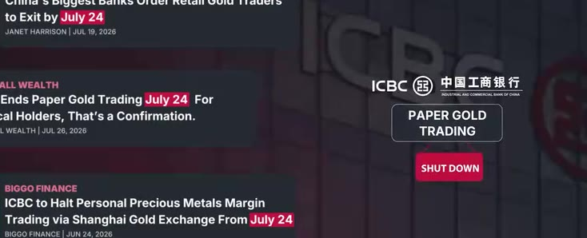
[00:20] 中国农业银行 / ICBC / 中国工商银行 / ITALAAOCONRCIALBANLOFCONA / PAPERGOLD / TRADING / SHUTDOWN
[00:30] The 4BiggestDormesticBanks / 中国银行 / 中国建设银行 / 中国农业银行 / ICBC / 中国工商银行 / BANK OF CHINA / China Construction Bank / AGRUCULTURALBANKOF CHHNA / PAPERGOLD / PAPERGOLD / PAPERGOLD / PAPERGOLD / TRADING / TRADING / TRADING / TRADING / SHUTDOWN / SHUTDOWN / SHUTDOWN / SHUTDOWN
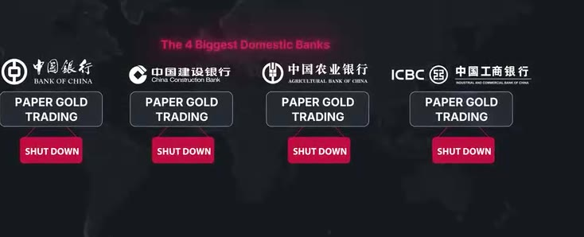
[00:40] BANKOFCHINA / CULTALEANKOFONA / ICBC / PAPERGOLD / PAPERGOLD / PAPERGOLD / PAPERGOLD / TRADING / TRADING / TRADING / TRADING / SHUTDOWN / SHUTDOWN / SHUTDOWN / SHUTDOWN / Bloomberg / ChineseBanksReininRetailGold Tradingon / Volatility / BLOOMBERGJUN25,2026 / South ChinaMorningPost / MajorChinesebankssuspend individual trading
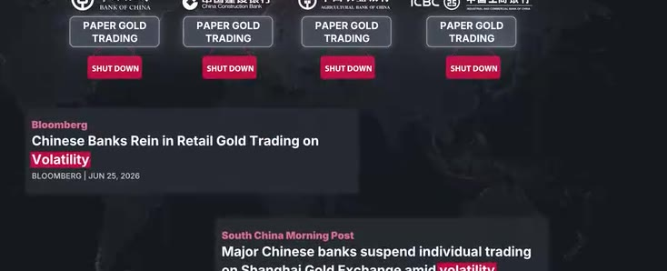
[00:50] 5,500 / $5,500 / 5,000 / 4,500 / 4,000 / 3,500 / 3,000 / 2,500 / Jan25 / Mar25 / Jun25 / Sep25 / Jan26 / ar26 / May26 / Aug26
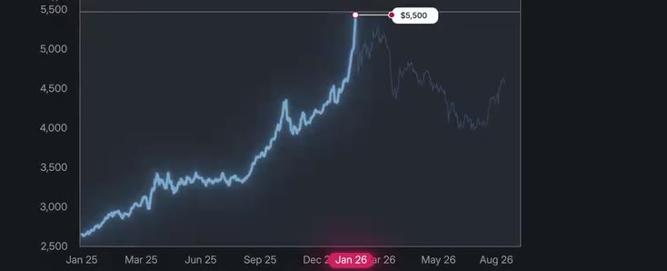
[01:00] 5,500 / 5,000 / 4,500 / 4,000 / $4,000 / 3,500 / 3,000 / 2,500 / Jan25 / Mar25 / Jun25 / Sep25 / Dec25 / Mar26 / May26 / Aug26
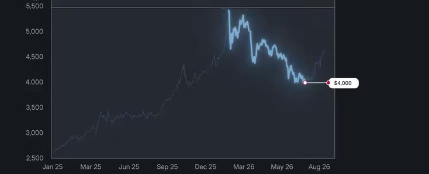
[01:10] Unofficial / Mar25 / Jun25 / Sep25 / Dec25 / Mar26 / May26 / Aug26
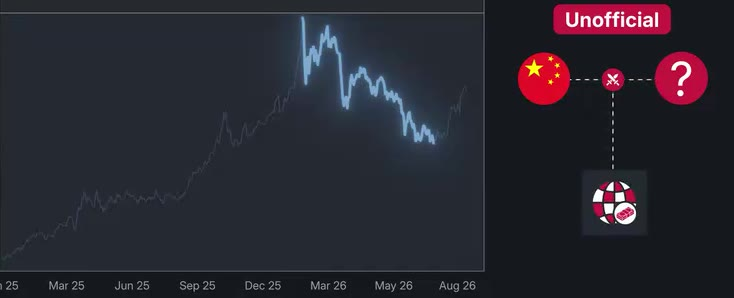
[01:20] Unofficial / Mar25 / Jun25 / Sep25 / Dec25 / Mar26 / May26 / Aug26
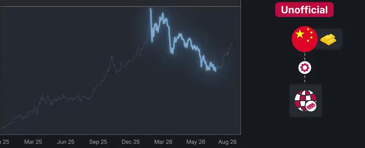
[01:30] 1920 / 1930 / 1940 / 1950 / 1960 / 1970 / 1980 / 1990 / 2000 / 2010 / 2020
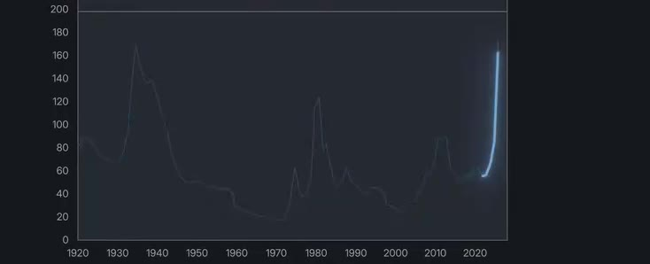
[01:40] 171% / 1920 / 1930s / 1950 / 1960 / 1970 / 1980 / 1990 / 2000 / 2010 / 2020
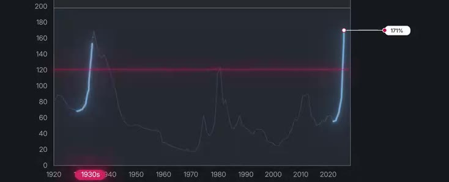
[01:50] 171% / 1920 / 1930 / 1940 / 1950 / 1960 / 1970 / 1980 / 1990 / 2000 / 2010 / 2020
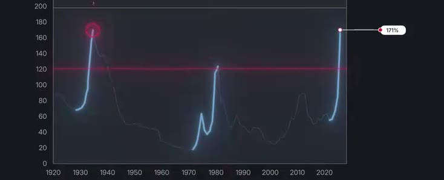
[02:00] $20-S35 / PEROUNCE / 171% / 1920 / 1930 / 1940 / 1950 / 1960 / 1970 / 1980 / 1990 / 2000 / 2010 / 2020
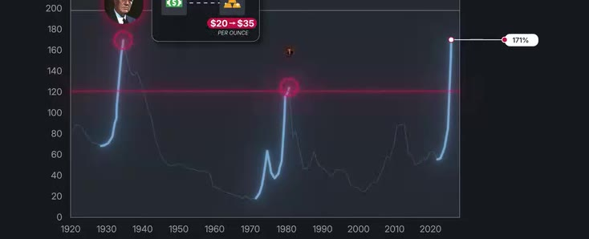
[02:10] $20-S35 / NIXON SHOCK / PEROUNCE / 171% / 1920 / 1930 / 1940 / 1950 / 1960 / 1970 / 1980 / 1990 / 2000 / 2010 / 2020
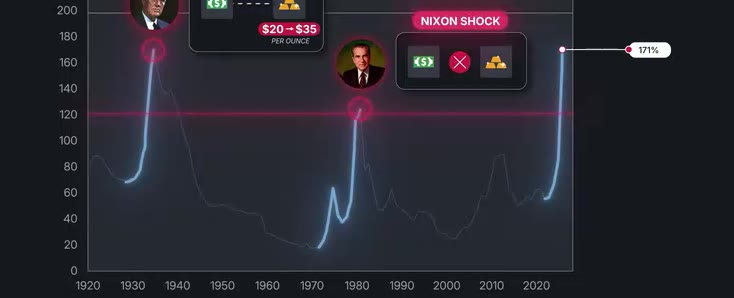
[02:20] REPRICING / GOLD / 1920 / 1930 / 1940 / 1950 / 1960 / 1970 / 1980 / 1990 / 2000 / 2010 / 2020
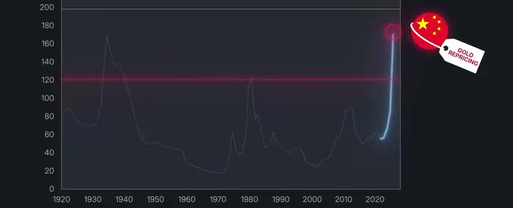
[02:30] 1943 / 1944 / 1945
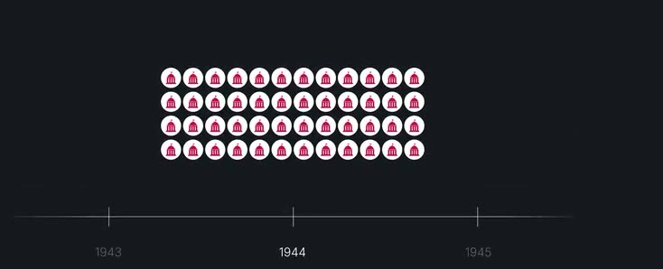
[02:40] BrettonWoodsConference
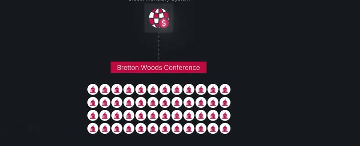
[02:50] 5) / BrettonWoodsConference
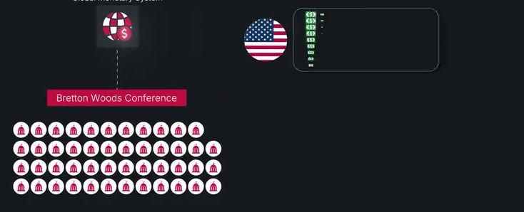
[03:00] （无文字）
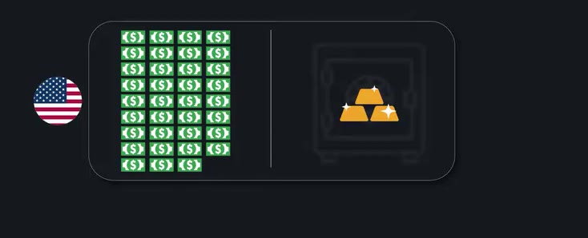
[03:10] 1947 / 1951 / 1955 / 1959 / 1963 / 1967 / 1971 / 1975 / 1979
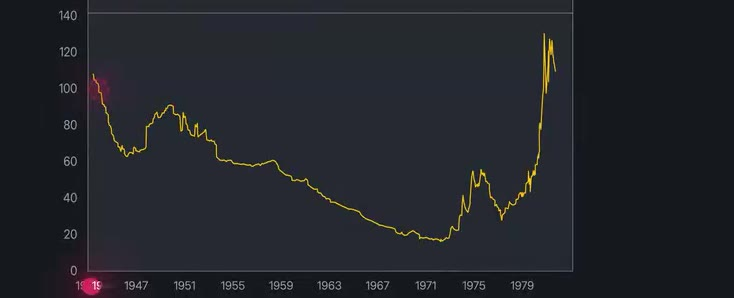
[03:20] 100% / 1943 / 1947 / 1951 / 1955 / 1959 / 1963 / 1967 / 1971 / 1975 / 1979
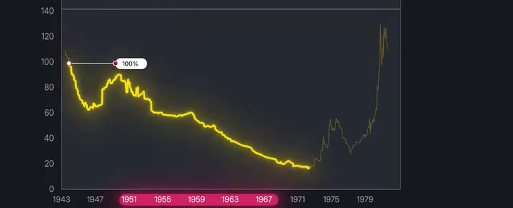
[03:30] Spending / Gold Holdings / 100% / Social / Programs / Geopolitical / Ambitions / 1947 / 1951 / 1955 / 1959 / 1963 / 1967 / 1971 / 1975 / 1979
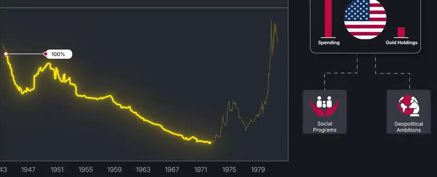
[03:40] 100% / US Central Bank / Monetary Base / 1947 / 1951 / 1955 / 1959 / 1963 / 1967 / 1971 / 1975 / 1979
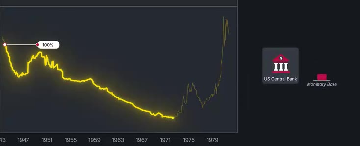
[03:50] $670 Bilon / 100% / US Central Bank / Monetary Base / 1968 / +4X / In Circulation / 1947 / 1951 / 1955 / 1959 / 1963 / 1967 / 1971 / 1975 / 1979
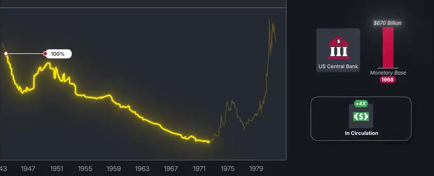
[04:00] 20% / 1943 / 1947 / 1951 / 1955 / 1959 / 1963 / 1967 / 1971 / 1975 / 1979
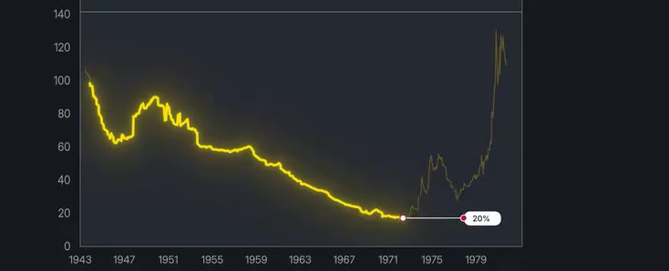
[04:10] S) / 20% / 1943 / 1947 / 1951 / 1955 / 1959 / 1963 / 1967 / 1971 / 1975 / 1979
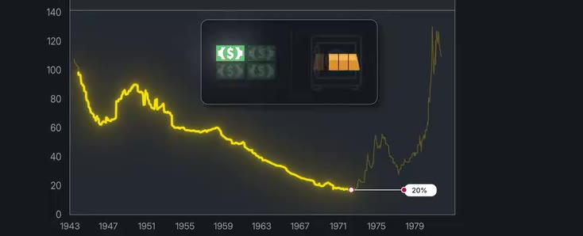
[04:20] Governments / Foreign / US Central Bank / 20% / 1943 / 1947 / 1951 / 1955 / 1959 / 1963 / 1967 / 1971 / 1975 / 1979
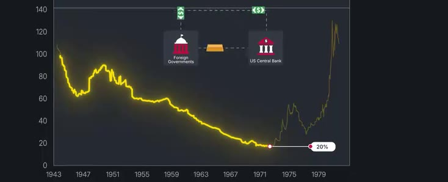
[04:30] Foreign / US Ceneral Bank / 20% / 1943 / 1947 / 1951 / 1955 / 1959 / 1963 / 1967 / 1971 / 1975 / 1979
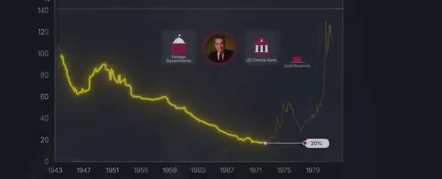
[04:40] BRETTONWOODSSYSTEM / $35 / 1943 / 1947 / 1951 / 1955 / 1959 / 1963 / 1967 / 1971 / 1975 / 1979
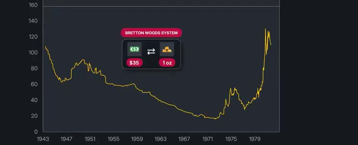
[04:50] Nixon Shock / 1943 / 1947 / 1951 / 1955 / 1959 / 1963 / 1967 / 1971 / 1975 / 1979
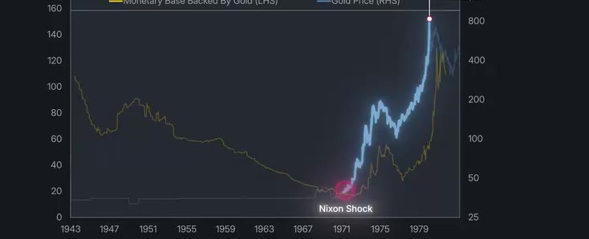
[05:00] BRETTON / SYSTEM / WOOD / Gold Prices / Nixon Shock / 1943 / 1947 / 1951 / 1955 / 1959 / 1963 / 1967 / 1971 / 1975 / 1979
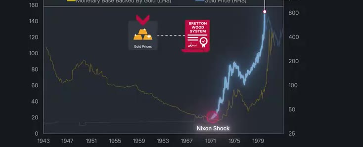
[05:10] Gold Prices / Physical Gold / Demand for / Nixon Shock / 1943 / 1947 / 1951 / 1955 / 1959 / 1963 / 1967 / 1971 / 1975 / 1979
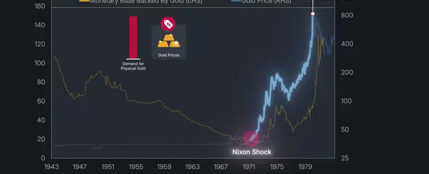
[05:20] 1-5% / Physical
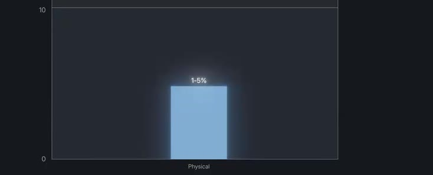
[05:30] 10zof / Physical Gola / Bank
[05:40] This paper entitles you to this exact / goldbarin exchange forXamount of / USdollars. / Bank
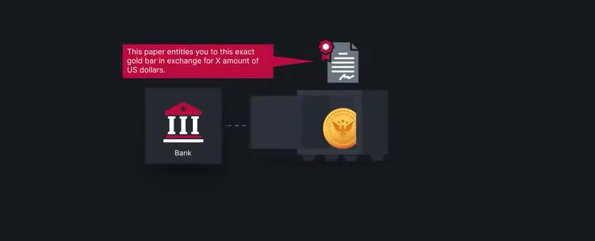
[05:50] Bank
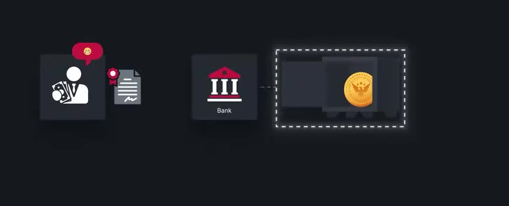
[06:00] Bank
[06:10] Bank
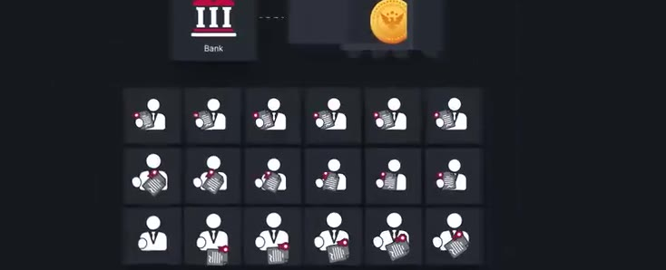
[06:20] PhysicalGold
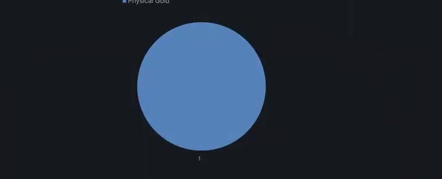
[06:30] PhiysicarGoid / IPaperGoid / 133xPaperGold / 1Physical Gold
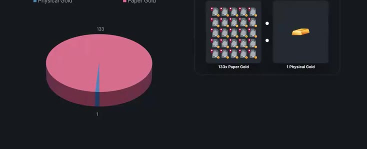
[06:40] PhiysicarGoid / PaperGoid / 133xPaper Gold / 1Physical Gold
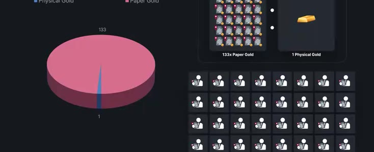
[06:50] PhiysicarGoid / Paper Goid / 133xPaper Gold / 1 Physical Gold
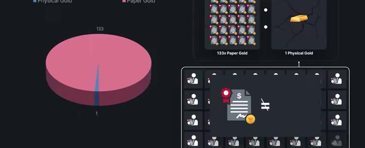
[07:00] Physical Gold / Paper Gold
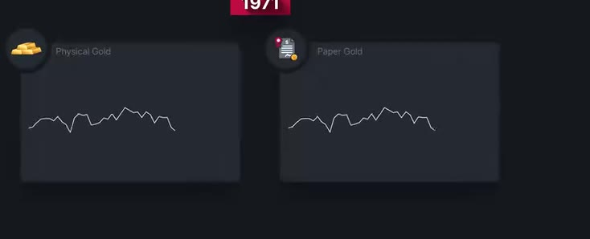
[07:10] Physical Gold / Paper Gold
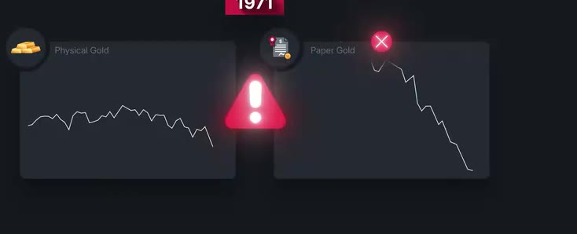
[07:20] Physical Gold / Paper Gold
[07:30] 0.2% / Normal Market
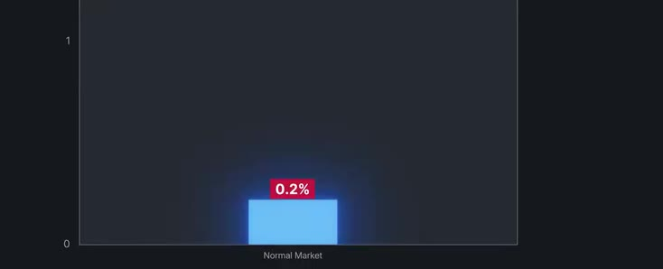
[07:40] 2.5% / +12x / 0.15 / Normal Market / Large Bars
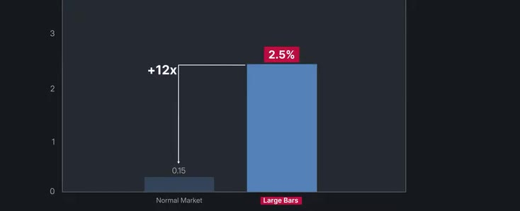
[07:50] Premium / 7.5 / Extra Cash / 2.5 / 0.15 / Normal Market / Large Bars / Coins/Small Bars
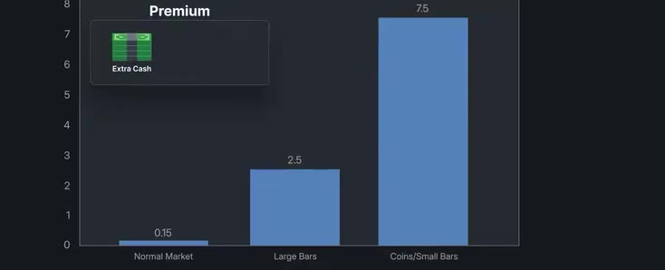
[08:00] Premium / 7.5 / Extra Cash / Physical Gold / 2.5 / 0.15 / Normal Market / Large Bars / Coins/Small Bars
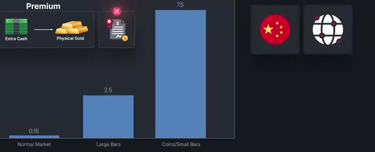
[08:10] 1,200 / 1,000 / 2010 / 2012 / 2014 / 2016 / 2018 / 2020 / 2022 / 2024
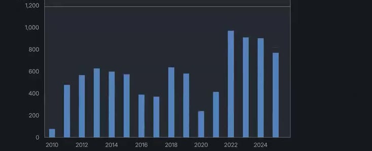
[08:20] 1,200 / 1,000 / 1000 Tons of Gold/Yr / 2010 / 2012 / 2014 / 2016 / 2018 / 2020 / 2022 / 2025
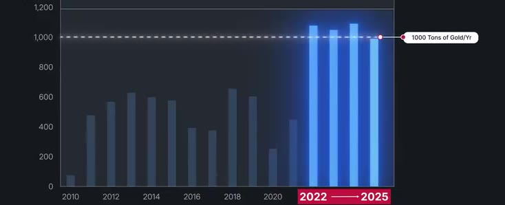
[08:30] 1,200 / 1,000 / Wealready know this. / 2010 / 2012 / 2014 / 2016 / 2018 / 2020 / 2022 / 2024
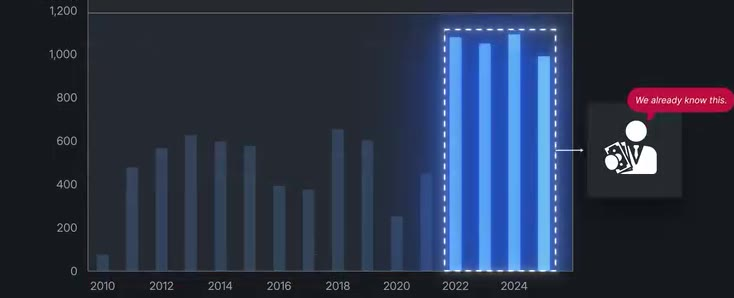
[08:40] COUNCIL / GOLD / I三
[08:50] Officially Reported
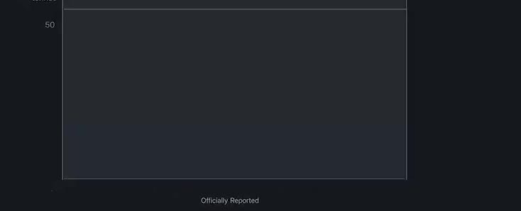
[09:00] Officially Reported / Actual Estimates
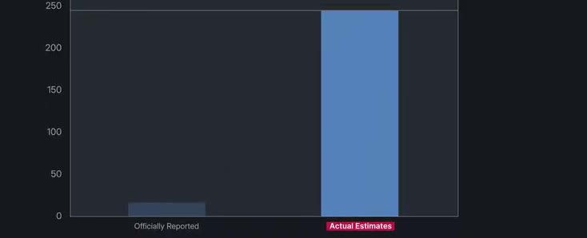
[09:10] （无文字）
[09:20] 1,600 / 1,500 / 1,400 / 1.300 / 1,200 / T190 / 2014 / 2015 / 2016 / 2017 / 2018 / 2019 / 2020
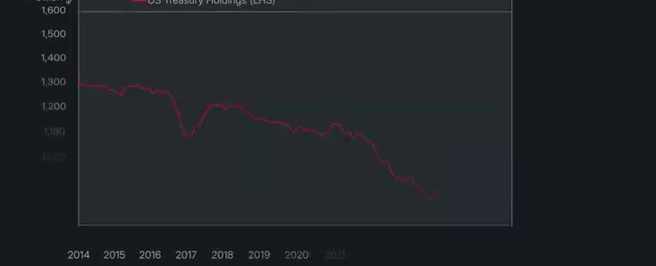
[09:30] 1,600 / 1,500 / 1,400 / 1,300 / 1,200 / 1,100 / 1,000 / 2014 / 2015 / 2016 / 2017 / 2018 / 2019 / 2020 / 2021 / 2022 / 2023 / 2024 / 2025
[09:40] 1,600 / 1,500 / 1,400 / 1,300 / 1,200 / 1,100 / 1000 / 2014 / 2015 / 2016 / 2017 / 2018 / 2019 / 2020 / 2021 / 2022 / 2023 / 2024 / 2025
[09:50] 2014
[10:00] LBMA / London Bullion Market Association / WesternPaper Gold Pricing / XuLuode / Chairman,Shanghai Gold Exchange
[10:10] Shanghgoid / OOnsS / internationai / XuLuode / Chairman, Shanghai Gold Exchange
[10:20] Shanghaigoldwillchange thecurrentgoldmarketwith / its'consumedin the East but pricedinthe West’ / arrangement.When Chinahas therightto speakin the / international gold market, / the tne price ofgold / willbe / revealed. / XuLuode / Chairman,Shanghai Gold Exchange
[10:30] LBMA
[10:40] 2026
[10:50] 2026
[11:00] 2026
[11:10] Physical Gold / 2026
[11:20] China / Paper Gold / Physical Gold
[11:30] China
[11:40] Shanghai Gold / Exchange / PeperGcid
[11:50] Shanghai Gold / Exchange / PeperGeid / Gd Claims / 133Paper
[12:00] Shanghai Gold / Exchange / Peper Gcid / Gd Claims / 133Paper
[12:10] China / New Gold / System / Shanghai Gold / Exchange / World
[12:20] China / NewGold / System / Shanghai Gold / Exchange / HongKong / World
[12:30] HongKong / Reuters / BeijingbolstersHongKongbond,goldtradinginglobalyuanpush / JULY27,2026 / Thecityisseekingto / growitstotalgoldstoragecapacitybymorethan10 timestoover2,000metric / tonsby2030.
[12:40] Hong Kong
[12:50] Hong Kong / 2,000Tons
[13:00] China / New Gold / System / Shanghai Gold / Exchange / Hong Kong
[13:10] China / PaperGold / System / NewGold / System / London / New York / Shanghai Gold / Exchange / Hong Kong
[13:20] China / PaperGold / System / New Gold / System / London / New York / Shanghai Gold / Exchange / Hong Kong
[13:30] Paper Gold / System / Gold / Gold / London / New York / DiscoveryAlert / Gold&SilverMarketDistortion:HowPaper / PricesMisleadInvestors / MUFLIHHIDAYATJUL16,2026
[13:40] US Government / PaperGold / System / Gold / Dollar / Dollar / London / New York / $40,000,000,000,000 / DiscoveryAlert / USDebt / eaud's / Gold&Silver MarketDistortion:HowPaper / PricesMislead Investors / MUFLHHIDAYAT|JUL62026
[13:50] Anchor / Gold
[14:00] 1971
[14:10] Yuan / Government / Chinese
[14:20] 1944
[14:30] Gold Coin / Gold Bracelet / Gold Necklace / Gold Ring
[14:40] （无文字）
[14:50] Spending / World
[15:00] Spending / World
[15:10] Spending / World
[15:20] （无文字）
[15:30] Weekswhere / decadeshappen / Decadeswhere nothinghappens
[15:40] Rules
[15:50] Rules / Rules / Stocks / Home Prices / Food / Energy / Volatile
[16:00] Stocks / Home Prices / Food / Energy / Volatile
[16:10] Investing
[16:20] Plan / Investing